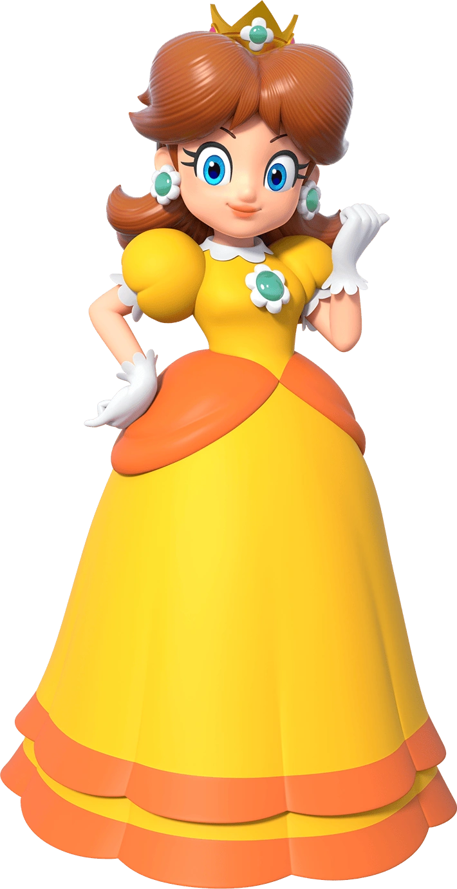

Princess Daisy

- Princesa Daisy é a governante do Reino de Sarasalândia ou Sarasaland.
- É a melhor amiga da Princesa Peach e o interesse amoroso de Luigi.
- É mais atrevida, espirituosa, determinada e energética.
- É mais atlética e mais esportiva do que a Peach, sendo totalmente apaixonada por esportes.
- Seus poderes estão mais relacionados ao aparecimento de flores e margaridas.
- Foi apresentada oficialmente como personagem do Mario no jogo Super Mario Land para o GameBoy, quando é sequestrada pelo alienígena Tatanga depois deste invadir seu reino com o desejo de casar com ela e torná-la sua rainha.
- Porém, começa a aparecer mais nos jogos a partir do Mario Party 3, lançado em 2000.
Página Anterior